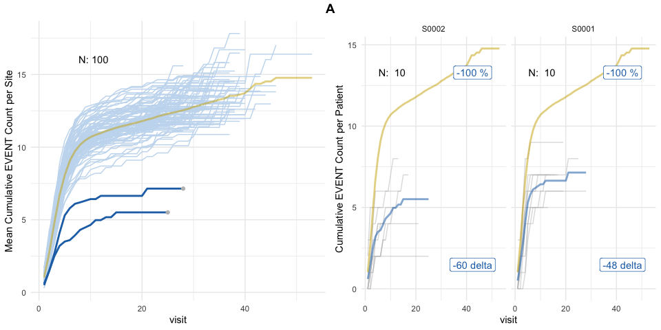

Simulate adverse event reporting in clinical trials with the goal of detecting under-reporting sites.
Monitoring of Adverse Event (AE) reporting in clinical trials is important for patient safety. We use bootstrap-based simulation to assign an AE under-reporting probability to each site in a clinical trial. The method is inspired by the ‘infer’ R package and Allen Downey’s blog article: “There is only one test!”.
Installation
CRAN
install.packages("simaerep")Development Version
You can install the development version from GitHub with:
# install.packages("devtools")
devtools::install_github("openpharma/simaerep")IMPALA
simaerep has been published as workproduct of the Inter-Company Quality Analytics (IMPALA) consortium. IMPALA aims to engage with Health Authorities inspectors on defining guiding principles for the use of advanced analytics to complement, enhance and accelerate current QA practices. simaerep has initially been developed at Roche but is currently evaluated by other companies across the industry to complement their quality assurance activities (see testimonials).

Publication
Koneswarakantha, B., Barmaz, Y., Ménard, T. et al. Follow-up on the Use of Advanced Analytics for Clinical Quality Assurance: Bootstrap Resampling to Enhance Detection of Adverse Event Under-Reporting. Drug Saf (2020). https://doi.org/10.1007/s40264-020-01011-5
Validation Report
Download as pdf in the release section generated using thevalidatoR.
Application
suppressPackageStartupMessages(library(simaerep))
suppressPackageStartupMessages(library(tidyverse))
suppressPackageStartupMessages(library(knitr))
set.seed(1)
df_visit <- sim_test_data_study(
n_pat = 1000, # number of patients in study
n_sites = 100, # number of sites in study
frac_site_with_ur = 0.05, # fraction of sites under-reporting
ur_rate = 0.4, # rate of under-reporting
ae_per_visit_mean = 0.5 # mean AE per patient visit
)
df_visit$study_id <- "A"
df_visit %>%
select(study_id, site_number, patnum, visit, n_ae) %>%
head(25) %>%
knitr::kable()| study_id | site_number | patnum | visit | n_ae |
|---|---|---|---|---|
| A | S0001 | P000001 | 1 | 0 |
| A | S0001 | P000001 | 2 | 1 |
| A | S0001 | P000001 | 3 | 1 |
| A | S0001 | P000001 | 4 | 2 |
| A | S0001 | P000001 | 5 | 3 |
| A | S0001 | P000001 | 6 | 3 |
| A | S0001 | P000001 | 7 | 3 |
| A | S0001 | P000001 | 8 | 3 |
| A | S0001 | P000001 | 9 | 3 |
| A | S0001 | P000001 | 10 | 3 |
| A | S0001 | P000001 | 11 | 3 |
| A | S0001 | P000001 | 12 | 3 |
| A | S0001 | P000001 | 13 | 4 |
| A | S0001 | P000001 | 14 | 4 |
| A | S0001 | P000001 | 15 | 4 |
| A | S0001 | P000001 | 16 | 6 |
| A | S0001 | P000001 | 17 | 6 |
| A | S0001 | P000002 | 1 | 0 |
| A | S0001 | P000002 | 2 | 0 |
| A | S0001 | P000002 | 3 | 0 |
| A | S0001 | P000002 | 4 | 0 |
| A | S0001 | P000002 | 5 | 0 |
| A | S0001 | P000002 | 6 | 0 |
| A | S0001 | P000002 | 7 | 0 |
| A | S0001 | P000002 | 8 | 1 |

Left panel shows mean AE reporting per site (lightblue and darkblue lines) against mean AE reporting of the entire study (golden line). Single sites are plotted in descending order by AE under-reporting probability on the right panel in which grey lines denote cumulative AE count of single patients. Grey dots in the left panel plot indicate sites that were picked for single plotting. AE under-reporting probability of dark blue lines crossed threshold of 95%. Numbers in the upper left corner indicate the ratio of patients that have been used for the analysis against the total number of patients. Patients that have not been on the study long enough to reach the evaluation point (visit_med75, see introduction) will be ignored.